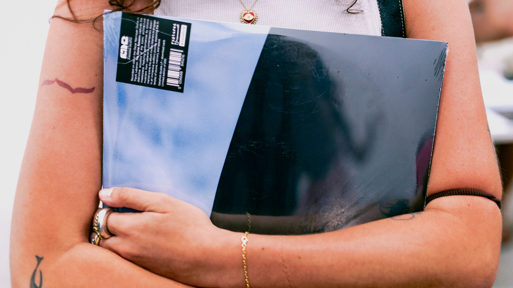
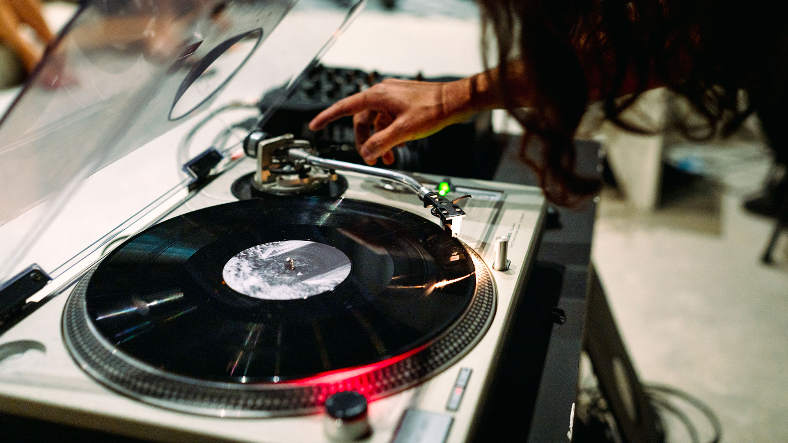
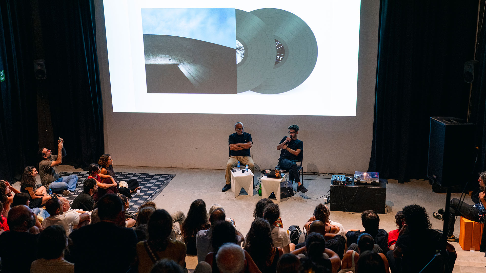

02THE VINYL
The Vinyl.
Sound that carries the architecture.

01THE RECORD
A space
you can hear.
The Dome Sessions invites listeners to a shared experience of space through sound.
The recordings emerged from the unique acoustic conditions of the unfinished Dome. Each artist adapted their approach to its lingering reverberation, letting the building become part of the music.
What began as an individual curiosity evolved into a collaborative experiment. The recorded sessions also form part of the soundtrack of the film.
Adapted from the project description by Wassila Abboud, December 2024.
02LISTEN & ORDER
Listen to
the sessions.
Stream the album or explore the physical release on Bandcamp.
VIEW ON BANDCAMP ↗03THE OBJECT
The record in images.

